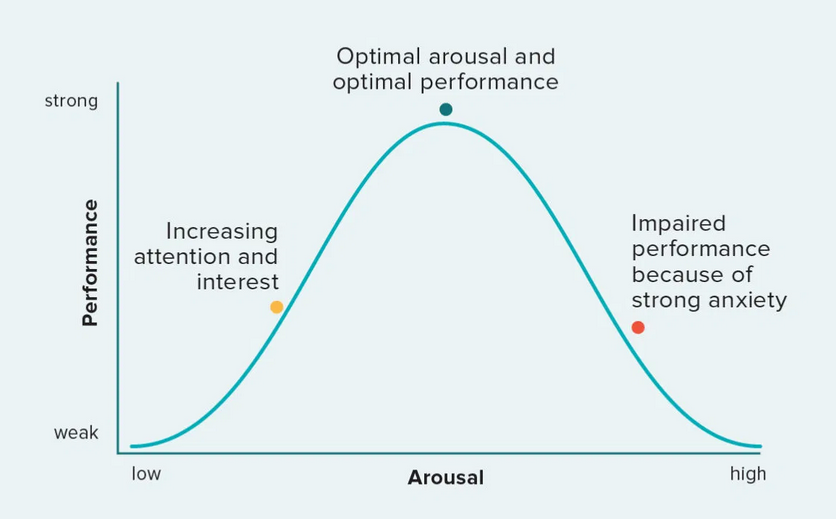
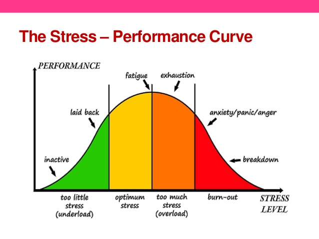

To perform your best, you need to manage your stress!
https://www.freeiconspng.com/images/trophy-png
You don't want to under or overstress for optimal performance.

https://www.healthline.com/health/yerkes-dodson-law
This model is based off the Yerkes Dodson model of stimulus which
models the relationship between stress and performance (Pietrangelo, 2020).
How does your level of stress affect your level of performance?
https://www.firstbeat.com/en/blog/3-types-of-psychological-stress-affecting-athletes-in-season/
Overstressing will ramp up your anxiety levels, and you'll become overwhelmed and unfocussed.
Understressing will mean you'll lose motivation to do well and underperform as a result.
Self-confidence can also play a major role in stress management, as if you lack it,
you're more susceptible to negative thinking which can increase stress.
What are some ways to regulate your stress levels for optimal performance?

https://giveandgopt.wordpress.com/2017/01/
If you're feeling overly stressed, do positive self affirmations, believe in yourself and focus on doing your best.
If you find you don't feel stressed, challenge yourself! Set large goals and work hard to meet and exceed them.
Bibiography
Pietrangelo, A. (2020, October 22). Yerkes-Dodson Law: How it correlates to stress, anxiety, performance. Healthline. Retrieved March 25, 2022, from https://www.healthline.com/health/yerkes-dodson-law